Diagram Alir Sistem

Sistem Monitoring Tekanan Berbasis ROS 2 Menggunakan Sensor FSR
Nama: Apri Ayu Lia
Program Studi: Teknik Biomedis
Institusi: Institut Teknologi Sumatera (ITERA)
Mata Kuliah: Robotika Medis
Pemantauan kondisi pasien secara berkelanjutan merupakan aspek krusial dalam pelayanan kesehatan, khususnya pada pasien dengan mobilitas terbatas. Tekanan berlebih akibat posisi statis dapat menyebabkan luka tekan (pressure ulcer).
Smart Pressure Alert System dikembangkan menggunakan sensor Force Sensitive Resistor (FSR) dan buzzer sebagai peringatan dini. Integrasi dengan ROS 2 memungkinkan pemantauan real-time dan pengolahan data lebih lanjut.
Pasien dengan keterbatasan gerak berisiko mengalami tekanan berlebih akibat posisi statis dalam waktu lama.
Pemantauan manual tidak dapat dilakukan secara kontinu dan sangat bergantung pada tenaga medis.
Sistem ini memberikan peringatan otomatis menggunakan buzzer saat tekanan melebihi ambang batas.


Tahap ini bertujuan untuk menyiapkan lingkungan kerja perangkat lunak agar sistem dapat dikembangkan, dijalankan, dan diintegrasikan dengan ROS 2 secara optimal.
1. Menyiapkan Sistem Operasi Utama (Windows 11)
Windows 11 digunakan sebagai host system (sistem utama) untuk menjalankan seluruh proses pengembangan.
Fungsi Utama:
Catatan: Pastikan Windows sudah ter-update, virtualisasi aktif di BIOS, dan RAM minimal 8 GB.
2. Mengaktifkan WSL 2 (Windows Subsystem for Linux)
WSL 2 memungkinkan menjalankan sistem operasi Linux langsung di dalam Windows tanpa dual boot.
Langkah-langkah:
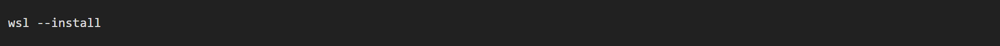
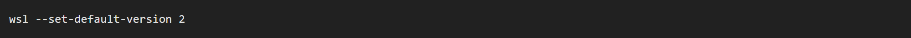
3. Instalasi Ubuntu 24.04 LTS
Ubuntu digunakan sebagai sistem operasi Linux utama untuk menjalankan ROS 2.
Langkah-Langkah:
4. Update Sistem Ubuntu
Update sistem dilakukan untuk memastikan seluruh package berada pada versi terbaru sebelum instalasi ROS 2.
Kode:
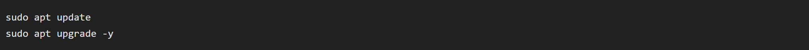
5. Instalasi ROS 2 Jazzy Jalisco
ROS 2 digunakan sebagai middleware komunikasi antara node publisher dan subscriber.
Langkah-langkah:
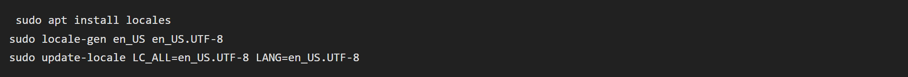
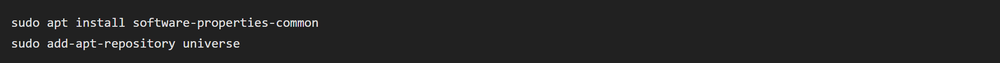
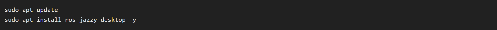
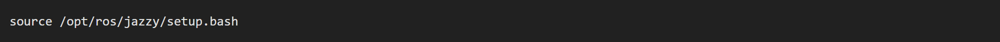
6. Instalasi Docker Desktop
Docker digunakan untuk menjalankan micro-ROS agent secara terisolasi.
Langkah-langkah:
7. Menjalankan micro-ROS Agent
Micro-ROS Agent berfungsi sebagai penghubung antara mikrokontroler ESP32 dan ROS 2.
Jalankan container:
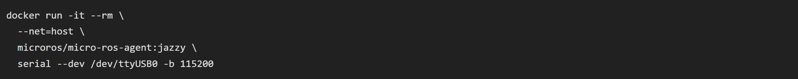
8. Instalasi Arduino IDE
Arduino IDE digunakan untuk pemrograman ESP32 dan pembacaan sensor FSR.
Langkah-langkah:
9. Instalasi Python
Python digunakan untuk pengembangan node ROS 2 dan monitoring data sensor.
Pastikan Pyhton terinstal:
Jika belum, lakukan:
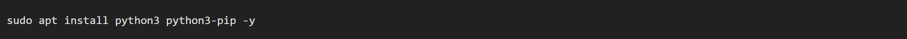

ESP32 diprogram untuk membaca sensor FSR dan mengaktifkan buzzer ketika tekanan terdeteksi.

Tahap ini menjelaskan langkah-langkah membuat dan menjalankan Logic Node pada ROS 2 untuk mengelola tekanan serta mengaktifkan alarm jika terdapat tekanan pada sensor.
1. Buka Terminal Ubuntu & Aktifkan ROS 2
Jalankan perintah berikut setiap membuka terminal baru:
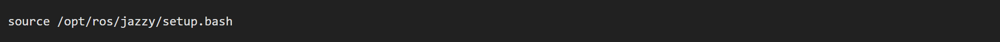
2. Buat ROS 2 Workspace
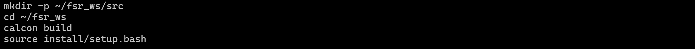
3. Buat Package ROS 2 (Python)
4. Masuk ke Folder Package
5. Buat File Python Logic Node

6. Script Python (Logic Node)
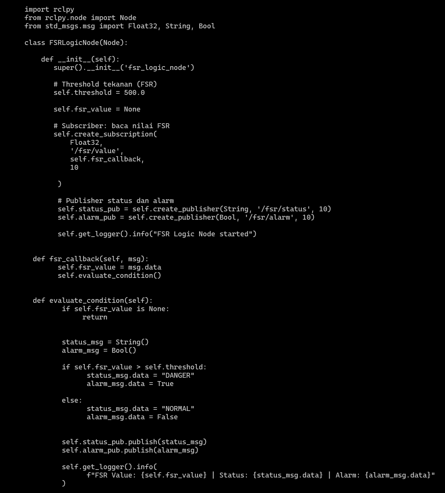
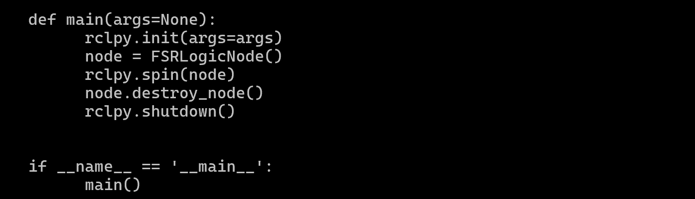
7. Edit setup.py agar Node Bisa Dijalankan
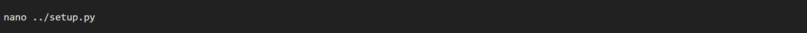
Tambahkan pada bagian entry_points:
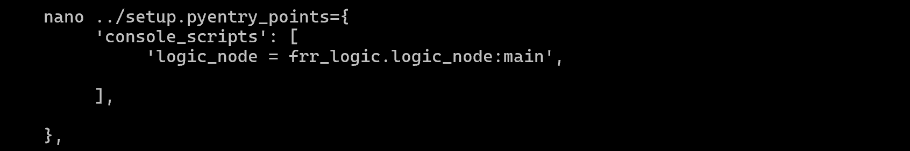
8. Build Ulang Workspace
9. Jalankan Logic Node
10. Uji Node (Manual dari Terminal)
Kirim data tekanan:
Cek status tekanan:
Cek alarm:
⚠️ Tahap ini bertujuan untuk mengidentifikasi dan menangani permasalahan yang muncul selama proses pengembangan Smart Incubator Monitoring System berbasis ESP32 + FSR + Buzzer, sehingga sistem dapat berjalan stabil dan optimal.
Penyebab: Board atau library belum terpasang dengan benar.
Solusi:
Penyebab: Koneksi serial atau konfigurasi rosserial tidak sesuai.
Solusi:
Penyebab: Topic tidak aktif atau node belum berjalan.
Solusi:
ros2 topic listPenyebab: Pin buzzer salah atau logika ROS 2 alarm tidak diterima.
Solusi:
/fsr/alarm diterima oleh node buzzerPenyebab: Sensor FSR rawan noise dan variasi resistansi.
Solusi: